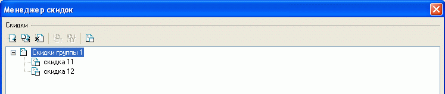
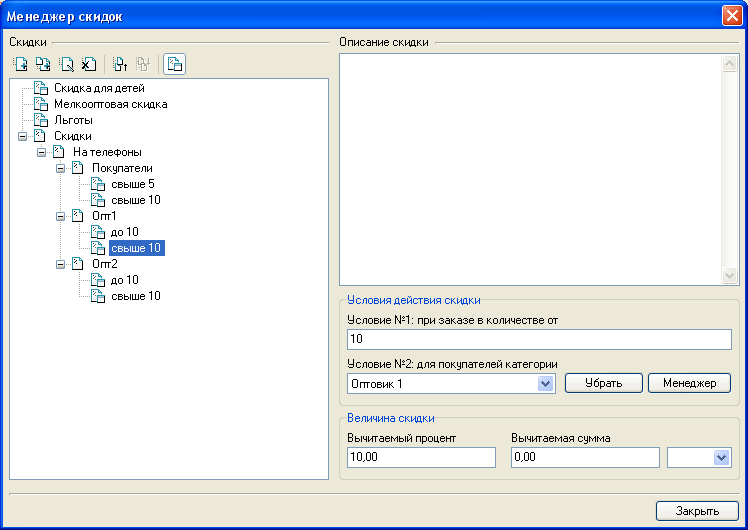
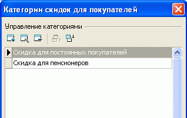
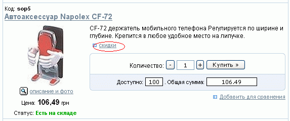
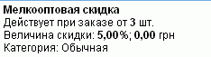
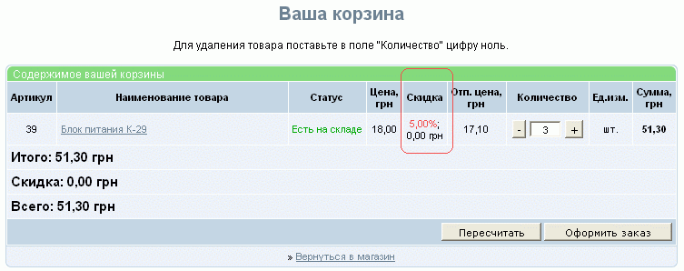
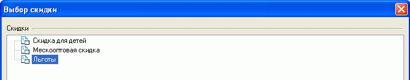
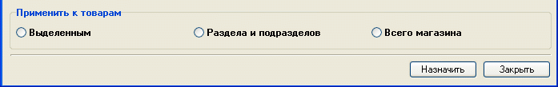

В закладке "Oбщиe дaнныe" карточки товара имеется опция "Cкидки распространяемые на товар", где задаются скидки, которые могут действовать на этот товар.
Для формирования всевозможных скидок служит менеджер скидок.
Вызов менеджера скидок осуществляется нажатием кнопки в главном окне программы, либо кнопкой "Менеджер" закладки "Общие данные" карточки товара, либо выбором пункта меню "Товары - Скидки - Менеджер скидок".
В левой части окна менеджера отображается дерево скидок. Скидки могут группироваться в разделы. Разделы и скидки можно добавлять, удалять, переименовывать, группировать, сортировать.

Для обозначения того, чем - разделом или скидкой - является вновь созданный объект, служит кнопка , расположенная над деревом скидок.
Раздел со скидками не имеет своих значений, а только группирует схожие подразделы или скидки.
Скидка имеет описание, набор условий действия ("при заказе в количестве от..." и "для покупателей категории..."), и абсолютное или относительное значение величины скидки.

Правила действия условий скидки предполагают, что скидка будет распространяться на покупателя, подпадающего под оба условия. Соответствие покупателя правилам определяется каждый раз в момент его идентификации на сайте (ввода логина и пароля).
Для создания категорий покупателей служит менеджер категорий скидок для покупателей, вызываемый нажатием кнопки "Менеджер" в окне менеджера скидок или выбором пункта меню "Товары - Скидки - Менеджер категорий скидок для покупателей:

Назначение покупателю определенной категории производится установкой параметров для выбранных клиентов в "Каталоге покупателей". Чтобы покупателю попасть в каталог покупателей ему достаточно просто зарегистрироваться. Проверка покупателя на возможное соответствие одному из правил скидок происходит в момент идентификации покупателя.
В случае, если на товар назначена скидка, при его отображении в разделе появляется ссылка "Скидки" (дизайн нижеследующих иллюстраций может отличаться от приведенного):

при клике на которую осуществляется переход на страницу товара с детальным отображением размера и условий действия скидки, применяющейся к этому товару:

если сумма заказа по данному товару подпадает под действие скидки, ее значение отображается при просмотре корзины в колонке "Скидка", а полученная в результате применения скидки отпускная цена - в колонке "Отп.цена":

В случае, если на ряд товаров действует одна и та же скидка, можно назначить ее всем этим товарам сразу. Для этого в перечне товаров можно выделить товары, подлежащие назначению скидки, и выбором пункта меню "Товары - Скидки - Назначить скидку группе товаров" вызвать окно выбора скидки:

после чего в нижней части окна указать область применения назначения: к выделенным, к товарам раздела и подраздела или товарам всего магазина и выполнить назначение скидки:
